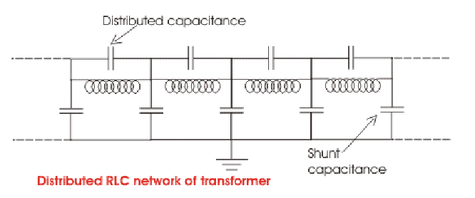
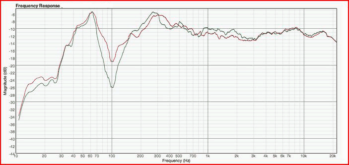
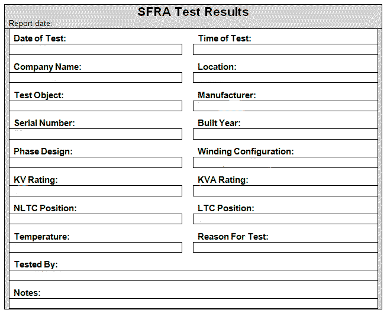

Different Connection During SFRA Test
Example Data Sheet for SFRA Test Result
This is very reliable and sensitive method or tool for condition monitoring of the physical condition of transformer windings. The winding of transformer may be subjected to mechanical stresses during transportation, heavy short circuit faults, transient switching impulses and lightening impulses etc. These mechanical stresses may cause displacement of transformer windings from their position and may also cause deformation of these windings. Windings collapse in extreme cases, such physical defects eventually lead to insulation failure or dielectric faults in the windings.
Sweep Frequency Response Analysis Test or in short SFRA Test can detect efficiently, displacement of transformer core, deformation and displacement of winding, faulty core grounds, collapse of partial winding, broken or loosen clamp connections, short circuited turns, open winding conditions etc.
Principle of SFRA Test
The principle of SFRA is quite simple. As all the electrical equipments theoretically have some resistance, inductor and some capacitance values hence each of them can be considered as a complex RLC circuit. The term 'theoretically' means some equipment may have very low or zero resistance compared to their inductor and capacitance values again, some equipments may have very low or zero inductor compared to their resistance and capacitance and again some equipments may have very low or zero capacitance compared to their resistance and inductor but theoretically all of them can be considered as RLC circuit although may be R = 0, or L = 0 or C = 0. But in most cases the resistance, inductor and capacitance of an equipment have non zero values. Hence most of the electrical equipments can be considered as RLC circuit hence they response to the sweep frequencies and produce an unique signature. As in a transformer each winding turn is separated from other by paper insulation which acts as dielectric and windings themselves have inductor and resistance, a transformer can be considered as a complicated distributed network of resistance, inductance, and capacitance or in other words a transformer is a complicated RLC circuit.

Because of that each winding of a transformer exhibits a particular frequency response.
In Sweep Frequency Response Analysis a sinusoidal voltage Vi is applied to one end of a winding and output voltage Vo is measured at the other end of the winding. Other windings are kept open.
As the winding is itself an distributed RLC circuit it will behave like RLC filter and gives different output voltages at different frequencies. That means if we go on increasing the frequency of the input signal without changing its voltage level we will get different output voltages at different frequencies depending upon the RLC nature of the winding. If we plot these output voltages against the corresponding frequencies we will get a particular patter for a particular winding.
But after transportation, heavy short circuit faults, transient switching impulses and lightening impulses etc, if we do same Sweep Frequency Response Analysis test and superimpose the present signature with the earlier patterns and observe some deviation between these tow graphs, we can asses that there is mechanical displacement and deformation occurred in the winding.

In addition to that, SFRA test also helps us to compare between physical condition of the same winding of different phases at the same tap position.
It also compares different transformers of the same design.
Analysis
Low frequency response
1) Winding behaves as a simple RL circuit formed by series inductor and resistance of the winding (At low frequencies capacitance cats as almost open circuit)
2) At low frequency winding inductances are determined by the magnetic circuit of the transformer core.
High frequency response
3) At high frequency winding behaves as RLC circuits
4) Winding exhibits many resonant points
5) Frequency responses are more sensitive to winding movement.
Different Connection During SFRA Test
| Signal applied across transformer terminals | Conditions |
|---|---|
| HV Red phase to Neutral | LV Red Yellow Blue phases are open |
| HV Yellow phase to Neutral | LV Red Yellow Blue phases are open |
| HV Blue phase to Neutral | LV Red Yellow Blue phases are open |
| HV Red phase to Neutral | LV Red Yellow Blue phases are shorted |
| HV Yellow phase to Neutral | LV Red Yellow Blue phases are shorted |
| HV Blue phase to Neutral | LV Red Yellow Blue phases are shorted |
| LV Red to Yellow phase | HV Red Yellow Blue phases and LV Blue phase are open |
| LV Yellow to Blue phase | HV Red Yellow Blue phases and LV Red phase are open |
| LV Blue to Red phase | HV Red Yellow Blue phases and LV Yellow phase are open |
Example Data Sheet for SFRA Test Result

 by
by {kind=link}
{kind=link}